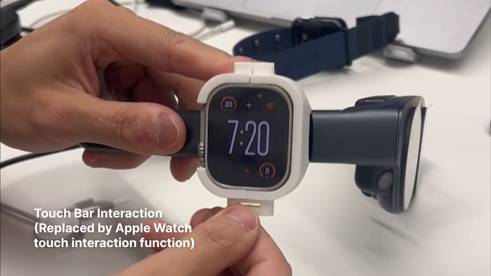
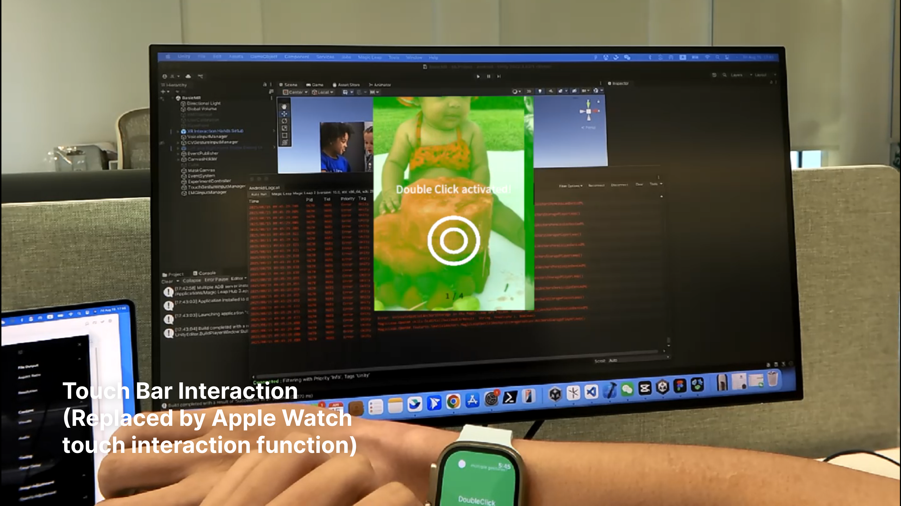
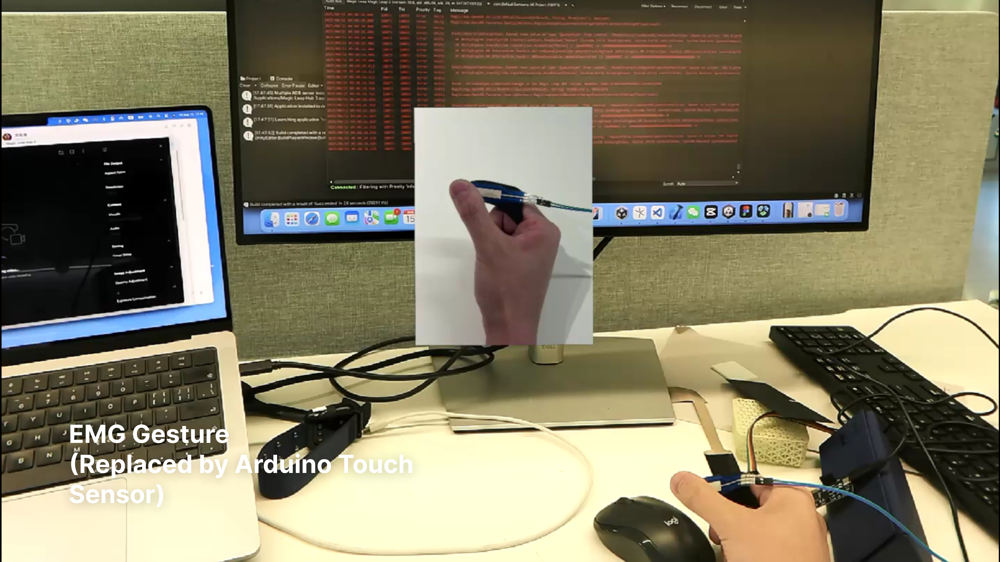
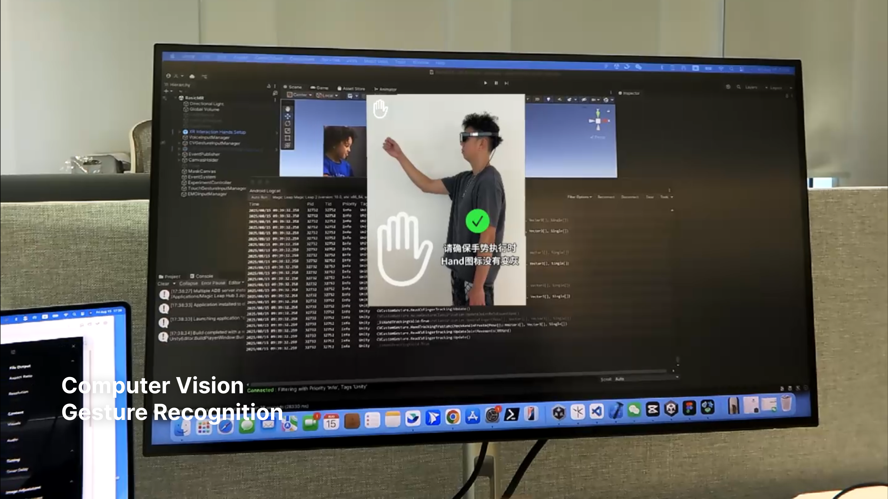
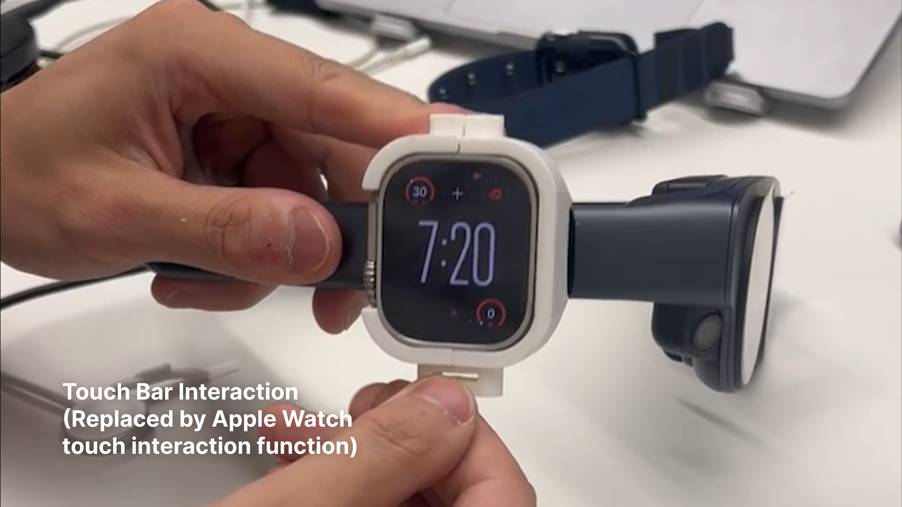
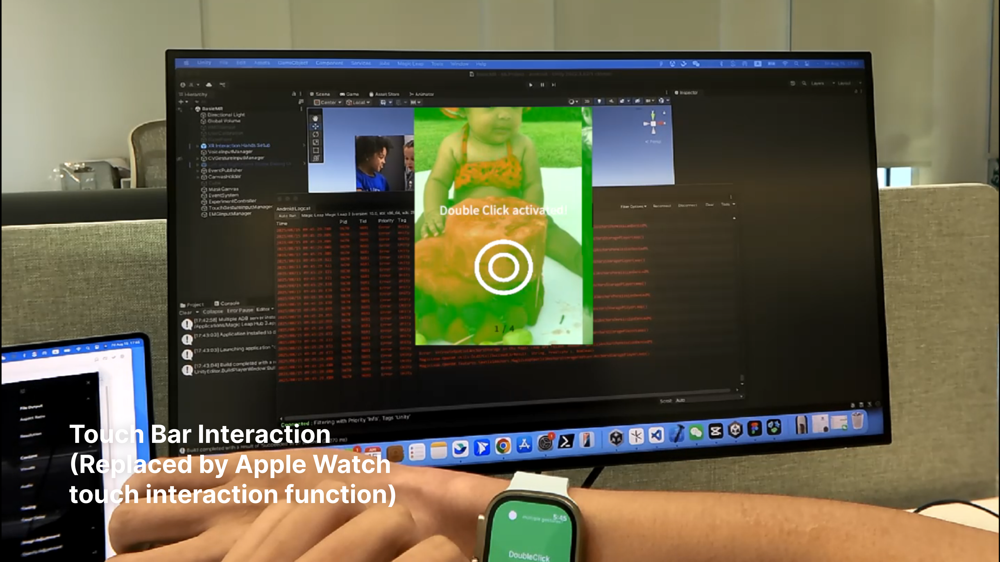
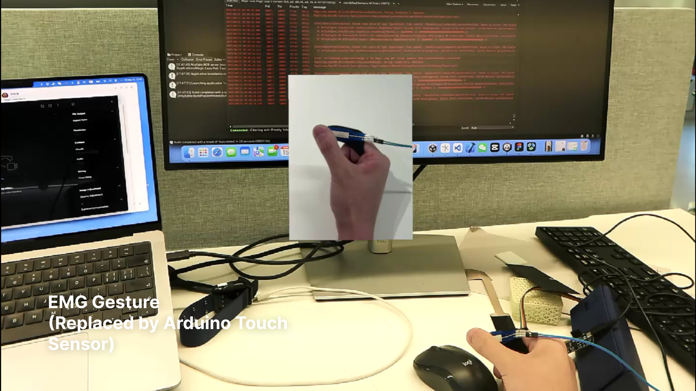
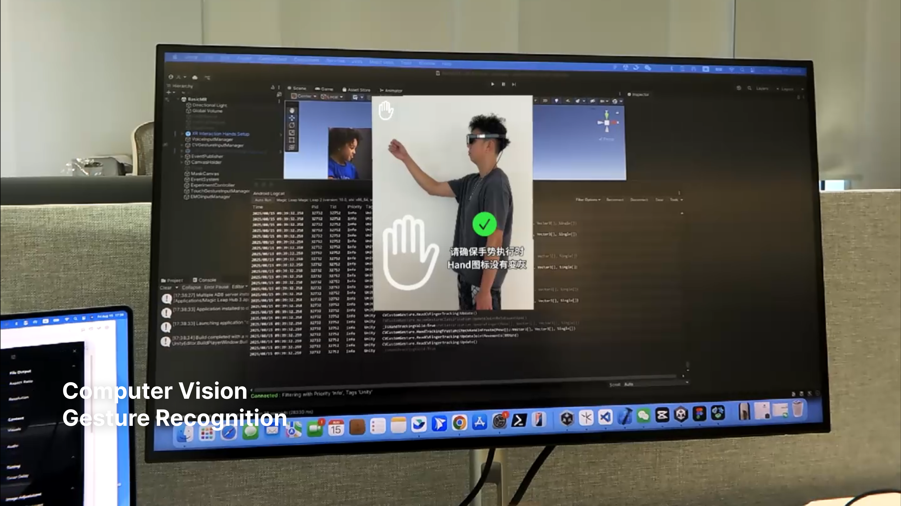

Multimodal Augmented Reality Interaction Prototype Design (Internship at PICO, ByteDance)
This project originates from my summer internship at PICO, ByteDance. During the internship, I was responsible for developing interaction prototypes for a wearable mixed reality product and its accessories, as well as evaluating the user experience. My contributions can be divided into four main areas:
1. Product Context Exploration
For the primary interactions of the wearable product and its accessories, I conducted a diary-based exploration of user behaviors. User interactions were logged in chronological order, and their frequency and significance were evaluated. Using an entropy-based algorithm, I identified events that were significant either in frequency or importance. Additionally, I selected events that were not prominent in frequency or importance but offered unique interaction experiences to define the product’s key usage scenarios.
2. Multimodal Interaction Prototype Development
I built multimodal interaction prototypes incorporating smartphone swipe (baseline interaction), touch slider interaction, computer vision (CV) gesture recognition, EMG gesture recognition, and voice interaction. The main technical challenges included:
A.Limited generalization of CV-based gesture recognition across different users;
B.Lack of hardware support for touch slider interaction;
C.Absence of a baseline model for EMG gesture recognition.
To address the CV generalization issue, we combined joint detection with rule-based constraints, simultaneously restricting gestures in terms of time and amplitude proportions, achieving over 92% recognition accuracy.
For EMG gesture recognition, we initially explored two approaches:
A. Small-scale data collection for recognition of 5 simple gestures;
B. Interpolating device channels and sampling rates to fit a Meta open-source model for real-time recognition.
However, neither approach achieved industrial-grade performance. Although offline EMG recognition reached ~92% accuracy, real-time classification frequently failed, likely due to insufficient dataset coverage. Approach B also produced many misclassifications.
To overcome this, we defined gestures using Arduino pressure sensors, effectively simulating EMG signals for robust real-time interaction.
3. Augmented Reality + AI Prototype Development
For the multimodal input channels developed in Step 2, my teammate and I created an AR-based AI interaction prototype. We utilized the native speaker on Magic Leap 2 to capture audio, sending the raw input to the Douban API for speech-to-text conversion. Using the Magic Leap 2 scene camera, we enabled an Android application to interact with the TikTok app, triggering functions based on specific keywords. This approach successfully addressed the limitation of Magic Leap 2, which natively supports English-only voice interactions, allowing for multilingual functionality in our prototype.
4. Small-Scale EMG Gesture Data Collection and Model Training
Within ByteDance, we collected EMG data from 15 participants, totaling 6,000 samples across 5 gestures. To determine the true start time of each gesture, we applied the Expectation-Maximization (EM) algorithm to align event timestamps more precisely with the actual gesture onset. By replicating Meta’s single-layer CNN and three-layer LSTM model, combined with the gradient modulation techniques described in the paper, we achieved over 92% accuracy in offline classification.
1. Multimodal Interaction Demo
2. Augmented Reality + AI Prototype Development
Design Type: Multi-modal Interaction, AI Interaction, Finger Tracking, EMG Classification, Mixed Reality Interaction
Project Type: Interniship Program
Time: 2025.5-2025.8
Instructor: Ennin Huang、Biliang Wang
Main Contributions:
1. Integrated Python, C#, and Swift to enable cross-platform interactions across Magic Leap, iOS, and Windows; developed multi-modal input interfaces (voice, CV/EMG gestures, eye-tracking, and Touch Bar) with a unified event handling and validation framework;
2. Trained Computer Vision models for 5 gesture classes and optimized parameters to improve real-time recognition accuracy by 10%;
3. Collected 6,000 EMG gesture samples from 15 participants and reproduced Meta's training pipeline to build a lightweight CNN+LSTM model achieving 95% offline recognition accuracy;
4. Resampled 500Hz EMG wristband data to 16 channels at 2000Hz via channel interpolation and spline-curve resampling; implemented real-time gesture recognition with 67% accuracy.
 






